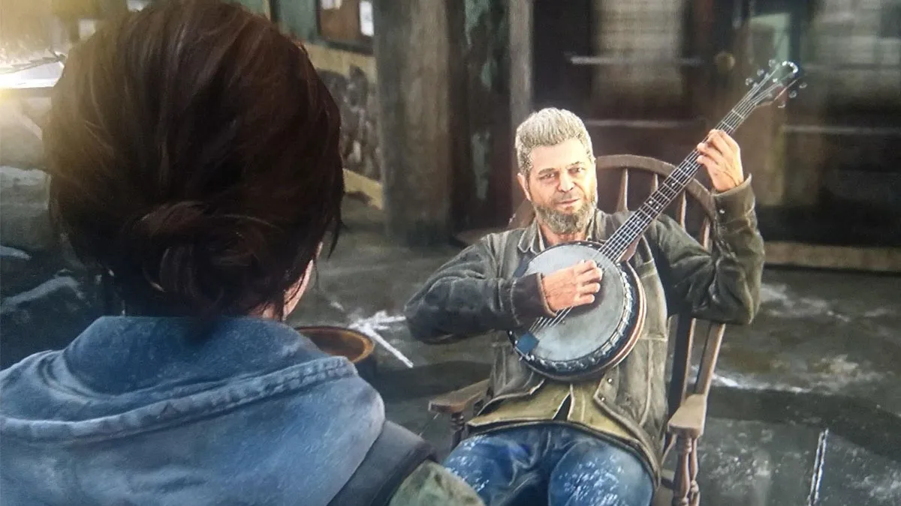

Homenaje a Santaolalla en el The last Of Us Part II:
Banda Sonora:
Gustavo Santaolalla, Andrew Buresh, Anthony Caruso y Jonathan Mayer se encargaron de componer la banda sonora de The Last of Us. Sony contrató a Santaolalla después de que Druckman y Straley escucharon algunas de sus composiciones, mientras recopilaban canciones que les parecían inspiradoras para el juego. En opinión de Straley: «[la música de Santaolalla posee] una instrumentación orgánica, minimalista, disonante y resonante con los sonidos». Santaolalla, que desde hacía un tiempo tenía interés en colaborar en algún videojuego, accedió emocionado. Comenzó a componer la banda sonora centrándose en el argumento y en las temáticas del juego, ya que Druckmann no le dio otras indicaciones. En su opinión, la música de The Last of Us debía «ser más oscura y con más textura, no necesariamente melódica [como sus composiciones anteriores]».
Una de sus influencias para la producción del material fue el álbum de No Country for Old Men. Santaolalla buscó evocar emociones en el jugador, más allá de generar una sensación de terror. Se usaron varios instrumentos durante las grabaciones con tal de transmitir «un elemento de peligro e inocencia», entre los cuales estuvo un ronroco que se usó para el tema principal y una guitarra desafinada que resultó útil para producir sonidos graves. La Nashville Scoring Orchestra participó en la grabación de los temas orquestales en los Ocean Way Studios, en Nashville. El resto del álbum se produjo en los EastWest Studios, en Hollywood, y Tom Baker estuvo a cargo de la masterización en Precision Mastering, en Los Ángeles. En algunas escenas del juego y de su expansión Left Behind pueden escucharse otras canciones que no forman parte de la banda sonora. Tal es el caso de los temas «I'll Never Get Out of This World Alive» y «Alone and Forsaken» de Hank Williams, la versión de «I Got You Babe» por Etta James, el «cuarteto de cuerdas número 3» de Piotr Ilich Chaikovski y el «cuarteto de cuerdas número 4 en E-menor (B.19)» por Antonín Dvořák.
Santaolalla real: